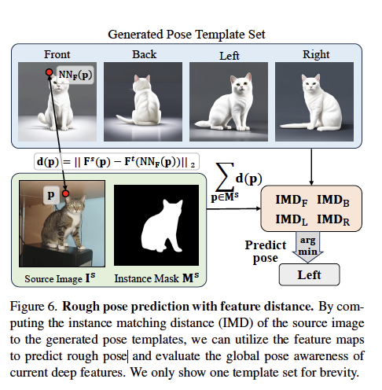
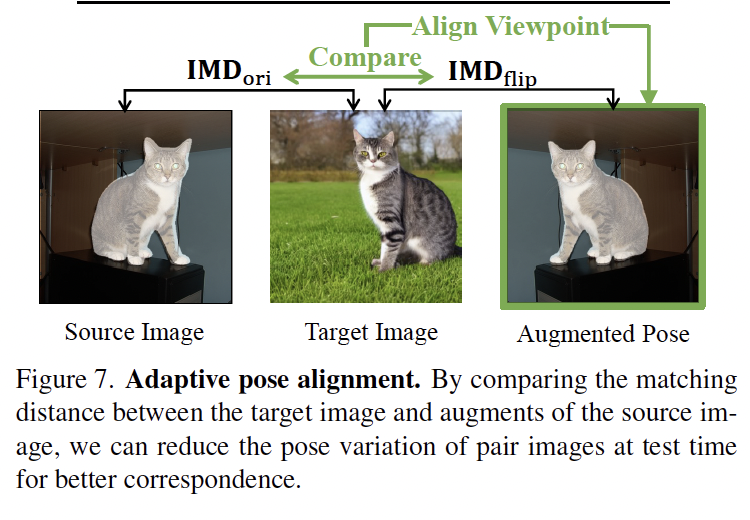
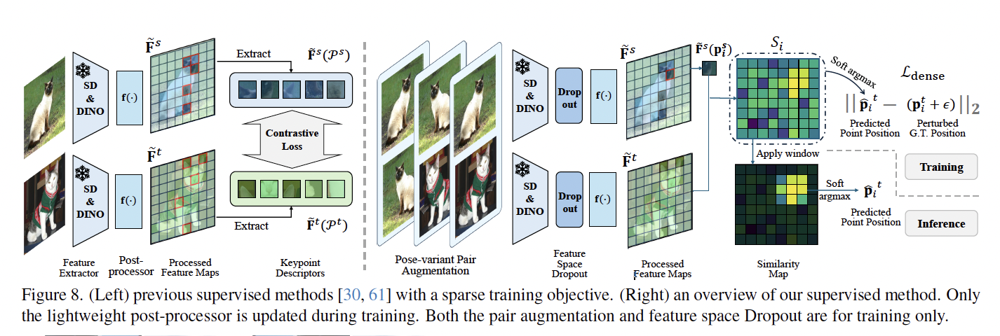

home..
Telling Left From Right:identifying Geometry Aware Semantic Correspondence
noonddudung2 / September 2024 (803 Words, 5 Minutes)
CVPR 2024
Paper
- Paper: Telling Left from Right
- Github: Telling Left from Right code
Abstract
- 문제점
- struggle to grasp the gemoetry and orientation of instances (오른쪽 vs. 왼쪽 같이 방향을 잘 모름)
- limitation of the current models under simple post-processing
- 해결책 & contributions
- improve geometric awareness of the features
- benchmark=
- SOTA
Introduction
- Semantic Correspondence
- 정의: the establishment of pixel-level matches between two imnages with semantically similar objects
- 문제: underperform on “geometry-aware” semantic coresspondences (ex. 오른쪽 왼쪽 구분 못함)
- “geometry-ambiguous matching” innate failure or can be alleviated through post processing?
- 해결책
- test-time viewpoint alignmnt startegy (viewpoint 똑같게 맞추기)
- train a lightweight post-processing module by using soft-argmax based dense training objective
- pose-vairant augmentation startegy, window soft-argmax module
- 해결책
Related Work
- Semantic Correspondence
- feature extraction
- cost volume computation
- mathicng field regression
Geometric Awareness of Deep Features (분석 느낌)
- Geometry-Aware Semantic Correspondence
- 정의: challenging case of semantic correspondence, requires an understanding of instances’ orientations or geometry
- semantic + orientation understanding이 복합적으로 필요한 cases
- cluster keypoints into subgroups by semantic parts: $\mathcal{G}_{parts}$
- parts = {ears, paws,…}
- subgroup consists of $p_{(parts,index)}$
- $p_{(paws,front \ left)}$
- $<p_i^s,p^t_i>$ correspondence two conditions
- same subgroup
- there are other visible keypoints belong to the same subgroup
- cluster keypoints into subgroups by semantic parts: $\mathcal{G}_{parts}$
- semantic + orientation understanding이 복합적으로 필요한 cases
- 정의: challenging case of semantic correspondence, requires an understanding of instances’ orientations or geometry
- Evaluation on the Geometry-aware Subset

- SPair-71k dataset의 60% 정도가 위의 조건을 만족하는 geometry-aware subset dataset임에도 불구하고, Geo set이 standard set보다 PCK 결과가 모든 method에 대해서 현저히 낮음 -> 그만큼 이런 set에 대해서 잘 못한다는 뜻
- Sensitivity to Pose Variation: standard set보다 geo가 더 민감
- Global Pose Awareness of Deep Features
- Instance matching distance (IMD) : pose prediction accuracy metric (포즈 별로 instance와의 distance 차이를 계산해서 가장 distance가 적은 pose로 예측)
$IMD(I^s,I^t,M^s)=\sum_{p \in M^s}{\lvert\lvert F^s(p)-NN(F^s(p).F^t)\rvert \rvert_2}$
- p: a pixel within the source instance mask
- $F^s(p)$: feature vector at p
- $NN(F^s(p),F^t)$: nearest-neighboring feature vector
- Pose prediction via IMD 
- Instance matching distance (IMD) : pose prediction accuracy metric (포즈 별로 instance와의 distance 차이를 계산해서 가장 distance가 적은 pose로 예측)
$IMD(I^s,I^t,M^s)=\sum_{p \in M^s}{\lvert\lvert F^s(p)-NN(F^s(p).F^t)\rvert \rvert_2}$
Improving Geo-Aware Correspondence (방법 제시)
- Test-time Adaptive Pose Alignment
- augmentation하면서 IMD가 minimum 되는 지점을 찾아서 align viewpoint 
- Dense Training Objective

- $\mathcal{L}= \mathcal{L_{dense}} + \mathcal{L_{sparse}}$
- $\mathcal{L_{sparse}}=CL(\tilde{F}^s(P^s),\tilde{F}^t(P^t))$ : contrastive loss, potentially neglects additional informative features
- $\mathcal{L_{dense} = \sum_i{\lvert\lvert \hat p^t_i - (p^t_i + \epsilon)\rvert \rvert _2}}$
- $\hat p^t_i$: predicted point position
- $p^t_i + \epsilon$: perturbed G.T. position
- $\mathcal{L}= \mathcal{L_{dense}} + \mathcal{L_{sparse}}$
- Pose-variant Augmentation: self flip - source img and flppied src img
- Window Soft Argmax: sub-pixel reasoningm prevents it from nosiy response
Limitations
- small instances
- extreme pose variations
Summary & Review
- 문제 정의: T2I SD의 “geometry-aware” 부족
- geometry-aware set을 정의해서 standard set과 비교를 통해 이 문제가 잘 해결되고 있지 않음을 증명/뷴석 (3) 후 방법 제시 (4)
- 방법 제시: pose prediction, loss 식 추가